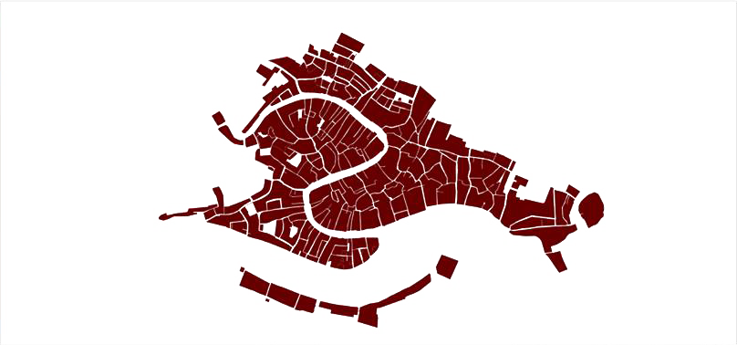
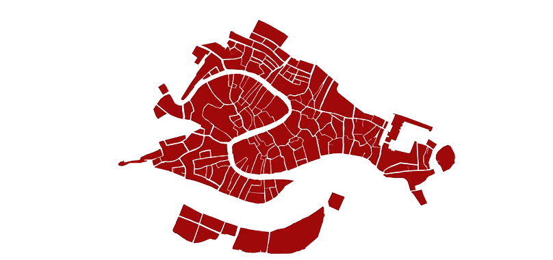
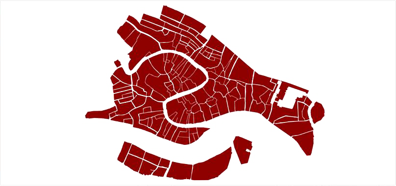
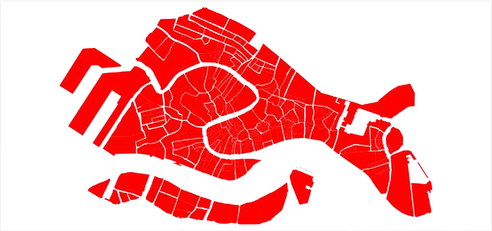

Welcome to the Venice Evolution Timeline!
Use the slider to explore GIS representations of how Venice has changed since it was first settled.
1100
Venice in 1100
GIS representation of Venice in 1100

1300
Venice in 1300
GIS representation of Venice in 1300 
1500
Venice in 1500
GIS representation of Venice in 1500 
1821
Venice in 1821
GIS representation of Venice in 1821 
2013
Venice Today
GIS representation of Venice in 2013 